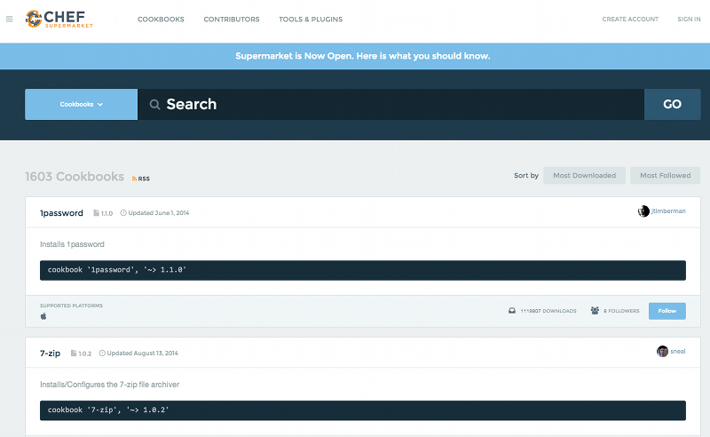

• Did someone already write that cookbook?
• The cookbook is available through the community site called Supermarket.
•
https://supermarket.chef.io

• Community cookbooks are managed by individuals.
• Chef does not verify or approve cookbooks in the Supermarket.
• Cookbooks may not work for various reasons.
• There are real benefits to community cookbooks.